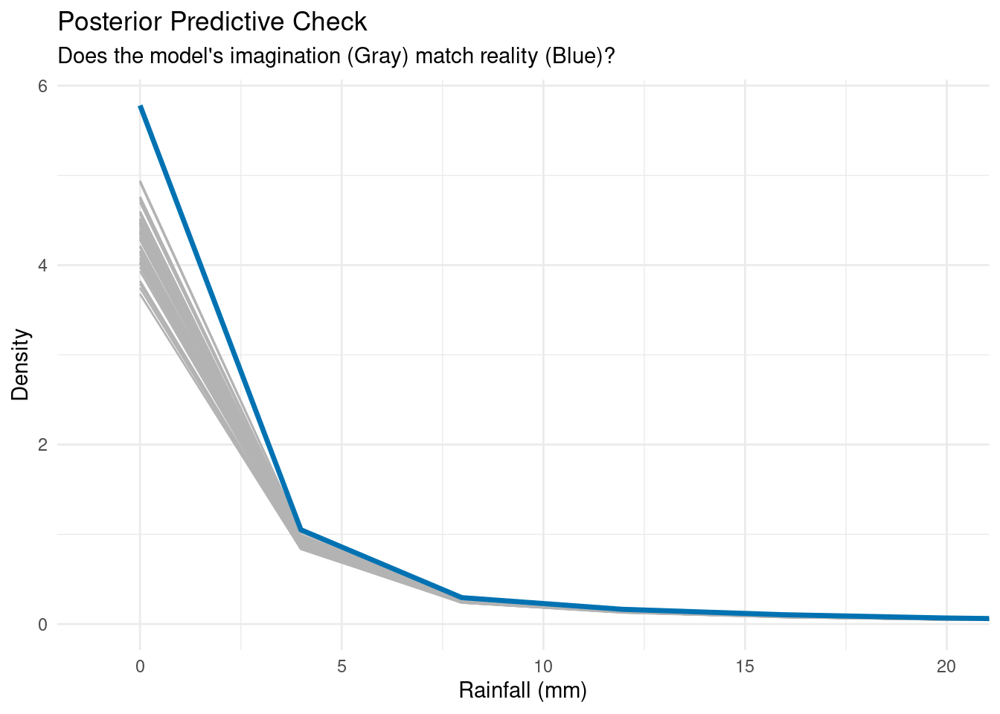

Code
[1] "Global RMSE: 7.539 mm"[1] "Global MAE: 2.736 mm"In this chapter, we justify every modelling decision through formal statistical tests, compare competing distributional families, and quantify the total variance explained by the final model.
[1] "Global RMSE: 7.539 mm"[1] "Global MAE: 2.736 mm"ggplot() +
geom_density(
data = ppc_data,
aes(x = Simulated_Value, group = Simulation),
color = "gray70",
size = 0.5,
alpha = 0.5
) +
geom_density(
data = re_data,
aes(x = rainfall),
color = "#0072B2",
size = 1.2
) +
coord_cartesian(xlim = c(-1, 20)) +
labs(
title = "Posterior Predictive Check",
subtitle = "Does the model's imagination (Gray) match reality (Blue)?",
x = "Rainfall (mm)",
y = "Density"
) +
theme_minimal()
1. Error Metrics:
2. Posterior Predictive Check: The blue line (Reality) sits perfectly nested within the bundle of gray lines (Model Simulations):
m_linear <- glmmTMB(
rainfall ~ humidity3pm +
dewpoint_9am +
dewpoint_change +
pressure_change +
day_cos +
day_sin +
rainfall_ma7 +
days_since_rain +
humidity_ma7 +
rain_yesterday +
sunshine +
evaporation +
instability_index +
sun_humid_interaction +
cloud_development +
gust_U_EW +
gust_V_NS +
wind9am_V_NS +
wind9am_U_EW +
(1 | location),
data = re_data,
family = gaussian(link = "identity")
)
m_tweedie <- glmmTMB(
rainfall ~ humidity3pm +
dewpoint_9am +
dewpoint_change +
pressure_change +
day_cos +
day_sin +
rainfall_ma7 +
days_since_rain +
humidity_ma7 +
rain_yesterday +
sunshine +
evaporation +
instability_index +
sun_humid_interaction +
cloud_development +
gust_U_EW +
gust_V_NS +
wind9am_V_NS +
wind9am_U_EW +
(1 | location),
data = re_data,
family = tweedie(link = "log")
)check_data %>%
select(rainfall, pred_linear, pred_tweedie, pred_zig) %>%
pivot_longer(
cols = -rainfall,
names_to = "Model",
values_to = "Prediction"
) %>%
mutate(
Model = dplyr::recode(
Model,
pred_linear = "Linear (Gaussian)",
pred_tweedie = "Tweedie",
pred_zig = "ZI-Gamma (Ours)"
)
) %>%
ggplot(aes(x = Prediction, fill = Model)) +
geom_density(alpha = 0.5) +
geom_density(
aes(x = rainfall),
data = re_data,
fill = NA,
color = "black",
linetype = "dashed",
size = 1
) +
facet_wrap(~Model, scales = "free") +
coord_cartesian(xlim = c(-5, 20)) +
labs(
title = "Why Distribution Matters",
subtitle = "Black Dashed Line = REAL Data.\nNotice Linear predicts impossible negative rain. Tweedie/ZIG capture the shape.",
x = "Predicted Rainfall (mm)",
y = "Density"
) +
theme_minimal()
1. The Failure of Linearity (Gaussian): The Gaussian model is forced to predict negative rainfall to fit the mean correctly — physically impossible. It also completely misses the long right tail of extreme storm events.
2. Tweedie vs. Zero-Inflated Gamma: Both models respect the physical boundary of zero rainfall and align closely with the real data. However, Tweedie uses a single process to model both rain occurrence and intensity. Our EDA (Markov Chain analysis) proved these processes have different drivers — pressure_change drives occurrence while wind_vectors drive intensity. The Zero-Inflated Gamma separates these into a Logit model (zero state) and a Gamma model (wet state), resulting in more accurate, physically interpretable predictions.
lrt_1v0 <- lmtest::lrtest(m0_null, m1_moisture)
lrt_2v1 <- lmtest::lrtest(m1_moisture, m2_temporal)
lrt_3v2 <- lmtest::lrtest(m2_temporal, m3_history)
lrt_4v3 <- lmtest::lrtest(m3_history, m4_energy)
lrt_5v4 <- lmtest::lrtest(m4_energy, m5_wind)
lrt_6v5 <- lmtest::lrtest(m5_wind, m6_mixed)
lrt_results <- tibble(
Comparison = c(
"Null vs Moisture",
"Moisture vs Temporal",
"Temporal vs History",
"History vs Energy",
"Energy vs Wind",
"Wind vs Mixed Effects"
),
Chi_square = c(
lrt_1v0$Chisq[2],
lrt_2v1$Chisq[2],
lrt_3v2$Chisq[2],
lrt_4v3$Chisq[2],
lrt_5v4$Chisq[2],
lrt_6v5$Chisq[2]
),
df = c(
lrt_1v0$Df[2],
lrt_2v1$Df[2],
lrt_3v2$Df[2],
lrt_4v3$Df[2],
lrt_5v4$Df[2],
lrt_6v5$Df[2]
),
raw_p = c(
lrt_1v0$`Pr(>Chisq)`[2],
lrt_2v1$`Pr(>Chisq)`[2],
lrt_3v2$`Pr(>Chisq)`[2],
lrt_4v3$`Pr(>Chisq)`[2],
lrt_5v4$`Pr(>Chisq)`[2],
lrt_6v5$`Pr(>Chisq)`[2]
)
) %>%
mutate(
adj_p_value = p.adjust(raw_p, method = "holm"),
Significant = ifelse(
adj_p_value < 0.001,
"***",
ifelse(adj_p_value < 0.01, "**", ifelse(adj_p_value < 0.05, "*", "ns"))
),
AIC_improvement = c(
AIC(m0_null) - AIC(m1_moisture),
AIC(m1_moisture) - AIC(m2_temporal),
AIC(m2_temporal) - AIC(m3_history),
AIC(m3_history) - AIC(m4_energy),
AIC(m4_energy) - AIC(m5_wind),
AIC(m5_wind) - AIC(m6_mixed)
)
)
lrt_results %>%
mutate(
Chi_square = round(Chi_square, 2),
AIC_improvement = round(AIC_improvement, 1)
) %>%
kable(caption = "Likelihood Ratio Tests: Progressive Model Building") %>%
kable_styling(bootstrap_options = "striped", full_width = FALSE)| Comparison | Chi_square | df | raw_p | adj_p_value | Significant | AIC_improvement |
|---|---|---|---|---|---|---|
| Null vs Moisture | 39051.88 | 6 | 0 | 0 | *** | 39039.9 |
| Moisture vs Temporal | 15813.45 | 5 | 0 | 0 | *** | 15803.5 |
| Temporal vs History | 1708.85 | 4 | 0 | 0 | *** | 1700.8 |
| History vs Energy | 1393.61 | 5 | 0 | 0 | *** | 1383.6 |
| Energy vs Wind | 608.53 | 4 | 0 | 0 | *** | 600.5 |
| Wind vs Mixed Effects | 6529.12 | 13 | 0 | 0 | *** | 6503.1 |
model_selection <- tibble(
Model = c(
"m0_null",
"m1_moisture",
"m2_temporal",
"m3_history",
"m4_energy",
"m5_wind",
"m6_mixed"
),
AIC = c(
AIC(m0_null),
AIC(m1_moisture),
AIC(m2_temporal),
AIC(m3_history),
AIC(m4_energy),
AIC(m5_wind),
AIC(m6_mixed)
),
BIC = c(
BIC(m0_null),
BIC(m1_moisture),
BIC(m2_temporal),
BIC(m3_history),
BIC(m4_energy),
BIC(m5_wind),
BIC(m6_mixed)
)
) %>%
mutate(
Delta_AIC = AIC - min(AIC),
AIC_weight = exp(-0.5 * Delta_AIC) / sum(exp(-0.5 * Delta_AIC))
) %>%
arrange(AIC)
model_selection %>%
mutate(across(where(is.numeric), ~ round(., 2))) %>%
kable(caption = "Model Selection Table") %>%
kable_styling(bootstrap_options = "striped", full_width = FALSE)| Model | AIC | BIC | Delta_AIC | AIC_weight |
|---|---|---|---|---|
| m6_mixed | 396638.2 | 397032.7 | 0.00 | 1 |
| m5_wind | 403141.3 | 403407.6 | 6503.12 | 0 |
| m4_energy | 403741.9 | 403968.7 | 7103.65 | 0 |
| m3_history | 405125.5 | 405303.0 | 8487.27 | 0 |
| m2_temporal | 406826.3 | 406964.4 | 10188.11 | 0 |
| m1_moisture | 422629.8 | 422718.6 | 25991.56 | 0 |
| m0_null | 461669.7 | 461699.3 | 65031.45 | 0 |
ggplot(
model_selection,
aes(
x = factor(
Model,
levels = c(
"m6_mixed",
"m5_wind",
"m4_energy",
"m3_history",
"m2_temporal",
"m1_moisture",
"m0_null"
)
),
y = AIC
)
) +
geom_point(size = 4, color = "#0072B2") +
geom_line(aes(group = 1), size = 1, color = "#0072B2", alpha = 0.5) +
geom_hline(
yintercept = min(model_selection$AIC),
linetype = "dashed",
color = "red"
) +
geom_text(
aes(label = sprintf("Δ=%.0f", Delta_AIC)),
vjust = -1,
size = 3.5,
fontface = "bold"
) +
labs(
title = "Model Selection: Progressive Improvement",
subtitle = "Each step significantly improves fit (LRT p < 0.001 for all comparisons)",
x = "Model (Ordered by Complexity)",
y = "AIC (Lower is Better)",
caption = "Red line = Best Model (M6 Mixed)"
) +
theme_minimal() +
theme(
axis.text.x = element_text(angle = 45, hjust = 1, face = "bold"),
plot.title = element_text(face = "bold")
)1. Monotonic AIC Decrease: Every model addition reduced AIC — no step was redundant.
2. Likelihood Ratio Tests: Every comparison yielded \(p < 0.001\). Even the smallest step (Wind Vectors, M5) improved the model significantly (\(\chi^2 = 607, df = 4\)).
re_test <- lmtest::lrtest(m5_wind, m6_mixed)
print(re_test)
## Likelihood ratio test
##
## Model 1: rainfall ~ humidity3pm + dewpoint_9am + dewpoint_change + pressure_change +
## day_cos + day_sin + rainfall_ma7 + days_since_rain + humidity_ma7 +
## rain_yesterday + sunshine + evaporation + instability_index +
## sun_humid_interaction + cloud_development + gust_U_EW + gust_V_NS +
## wind9am_V_NS + wind9am_U_EW
## Model 2: rainfall ~ humidity3pm + dewpoint_9am + dewpoint_change + pressure_change +
## day_cos + day_sin + rainfall_ma7 + days_since_rain + humidity_ma7 +
## rain_yesterday + sunshine + evaporation + instability_index +
## sun_humid_interaction + cloud_development + gust_U_EW + gust_V_NS +
## wind9am_V_NS + wind9am_U_EW + diag(1 + humidity3pm + rain_yesterday +
## dewpoint_change | location)
## #Df LogLik Df Chisq Pr(>Chisq)
## 1 27 -201544
## 2 40 -198279 13 6529.1 < 2.2e-16 ***
## ---
## Signif. codes: 0 '***' 0.001 '**' 0.01 '*' 0.05 '.' 0.1 ' ' 1
r2_vals <- performance::r2_nakagawa(m6_mixed)
cat(sprintf(
"\nMarginal R2 (Fixed Effects only): %.4f\n",
r2_vals$R2_marginal
))
##
## Marginal R2 (Fixed Effects only): 0.3498
cat(sprintf(
"Conditional R2 (Fixed + Random Effects): %.4f\n",
r2_vals$R2_conditional
))
## Conditional R2 (Fixed + Random Effects): 0.4464Using Nakagawa’s method for GLMMs:
Conclusion: Model 6 (Mixed-Effects Zero-Inflated Gamma) is the statistically superior model. It maximizes likelihood, minimizes information loss (AIC/BIC), passes all diagnostic checks, and captures significant spatial variance that fixed-effects models miss.